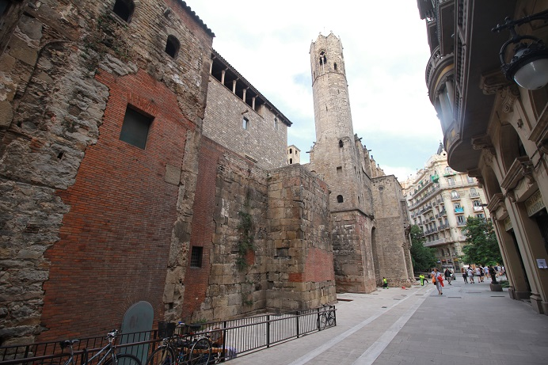

| 1 | : | Desayunamos en el restaurante del hotel, a las 7:30. |
| 2 | : | Cuando terminamos de comer, Kanako y Richard llegaron al restaurante. |
| 3 | : | Kanako nos dio información sobre el mercado cerca del hotel. |
| 4 | : | Decidimos ir allí rápidamente. |
| 5 | : | Esta vez realmente tuvimos que despedirnos de Kanako y Richard. |
| 6 | : | El mercado estaba casi a 5 minutos del hotel. |
| 7 | : | Todavía la mayoría de las tiendas estaba cerrada. |
| 8 | : | Había una tienda de aceite de oliva, pero las luces de la tienda estaban apagadas. |
| 9 | : | Le pregunté a una empleada: "Está abierto?" y ella nos dijo: "Sí" sonriendo e hizo encender las luces a otra empleada. |
| 10 | : | Compramos mucho aceite de oliva, para los regalos y para nosotros también. |
| 11 | : | Regresamos al hotel y empacamos el aceite de oliva en la maleta y registramos nuestra salida rápidamente. |
| 12 | : | Agradecimos a la recepcionista por ayudarnos por tres días y salimos del hotel. |
| 13 | : | Fuimos a la Plaza de Catalunya, a pie, donde salen los autobuses al aeropuerto. |
| 14 | : | Tomamos un atajo diferente al del día anterior y llegamos a la plaza en 10 minutos, aunque llevábamos la maleta. |
| 15 | : | El bus que se llama Aero bús para ir al aeropuerto, llegó en punto y le pagamos a la conductora €5.90 por persona. |
| 16 | : | Desde el autobús pudimos ver algunos lugares donde no pudimos estar en los 3 días en Barcelona. |
| 17 | : | Todo era maravilloso y quisiera volver algún día. |
| 18 | : | Llegamos al aeropuerto en, casi, 30 minutos. |
| 19 | : | Teníamos más de 3 horas hasta el vuelo, pero los mostradores y los controles de seguridad estaban llenos y tardó mucho tiempo. |
| 20 | : | En el control de seguridad solo yo tuve una inspección al azar, otra vez. |
| 21 | : | John me dijo: "Yo parezco más sospechoso que tú, pero nunca he tenido una inspección, es puramente al azar." |
| 22 | : | Si alguien toma un avión ocasionalmente, creo que nadie ha tenido 3 inspecciones en su vida. |
| 23 | : | Por supuesto pude pasar sin problema. |
| 24 | : | Cuando estaba en la cola del control de pasaportes, muchas personas se adelantaron en la cola diciendo que no podrían llegar a tiempo para su vuelo. |
| 25 | : | Un estadounidense detrás de nosotros también dijo que había perdido su vuelo el día anterior y lo había cambiado para ese día. |
| 26 | : | John siempre les dice a sus clientes que lleguen al aeropuerto, al menos, 3 horas antes del vuelo internacional. |
| 27 | : | Sin embargo ellos siempre se excusan y les echan la culpa a los demás. |
| 28 | : | Teníamos suficiente tiempo, así que compramos regalos en las tiendas libres de impuestos utilizando los euros que Kanako nos había dado el día anterior. |
| 29 | : | Pero no pudimos usar unos euros. |
| 30 | : | A la hora de abordar el avión, abordamos con muchos recuerdos. |
| 31 | : | Cathay Pacific salió a las 13:20, a tiempo. |
| 32 | : | Íbamos a llegar a Hong Kong temprano en la mañana, por eso tratamos de dormir lo más posible. |
| 33 | : | Llegamos a Hong Kong casi a las 6:30 de la mañana en el vuelo de 11 horas. |
| 34 | : | Después del control de seguridad, pasamos unas horas en el aeropuerto comiendo despacio tartas de huevo. |
| 35 | : | Cathay Pacific salió a las 10:30, a tiempo. |
| 36 | : | Aproximadamente en 4 horas, a las 15:30, llegamos seguros al aeropuerto de Narita. |
| 37 | : | El vuelo de 4 horas fue muy rápido. |
{kind=link}
{kind=link}
{kind=link}